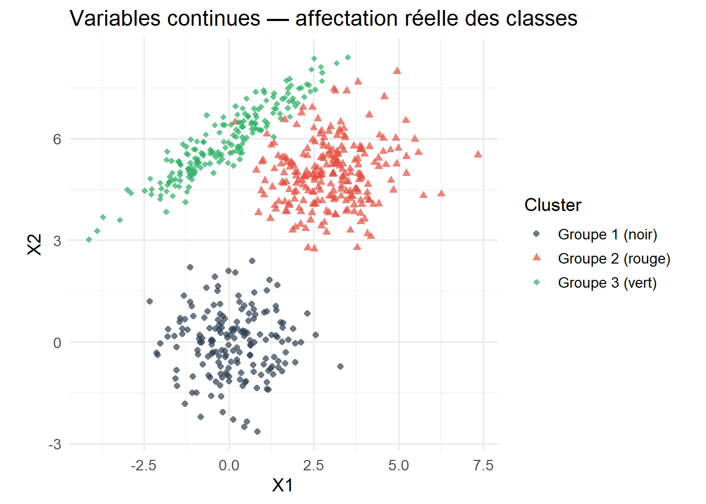
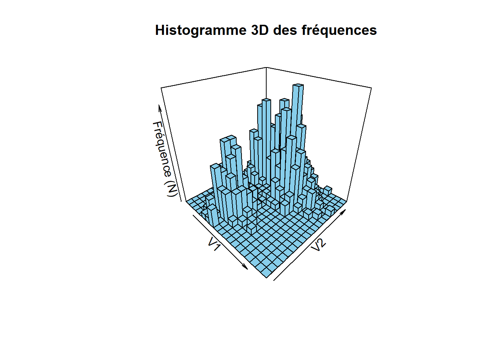
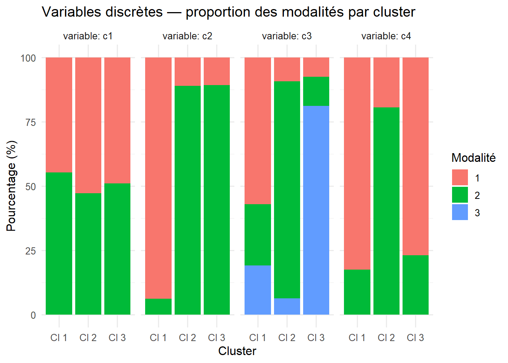
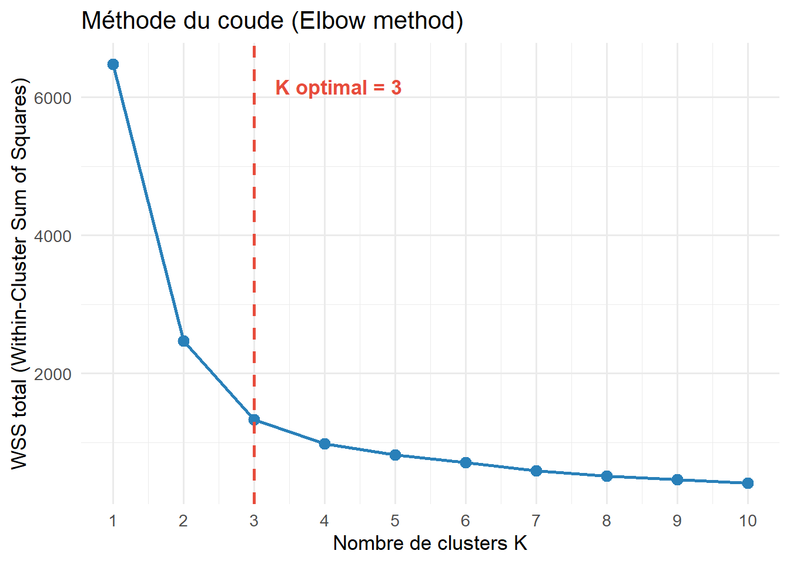
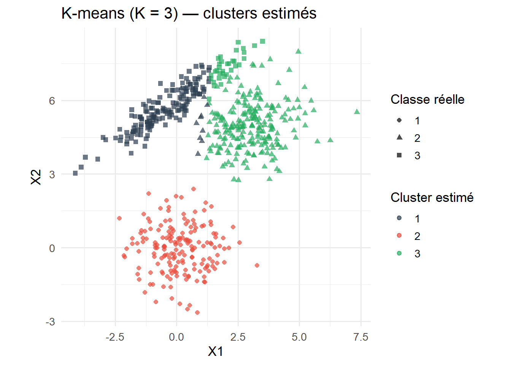
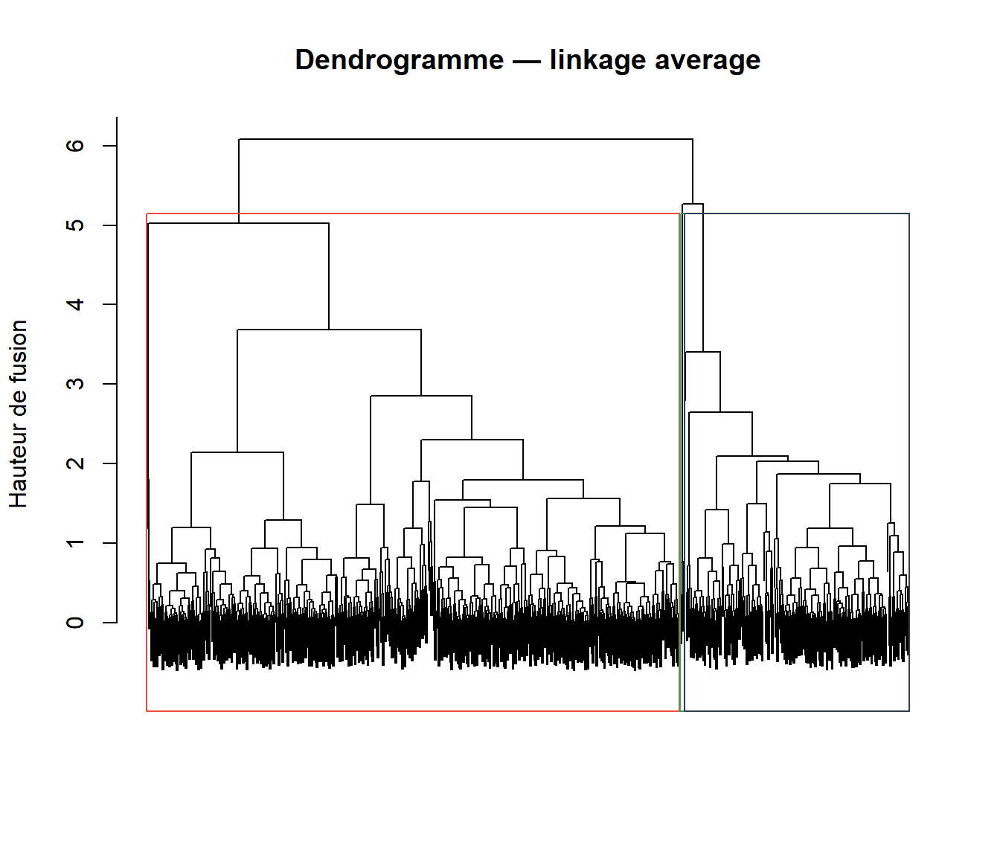
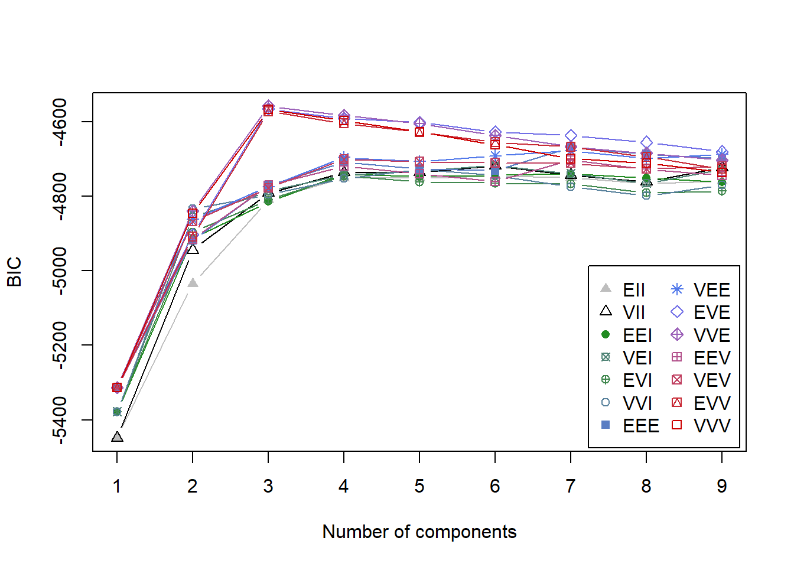
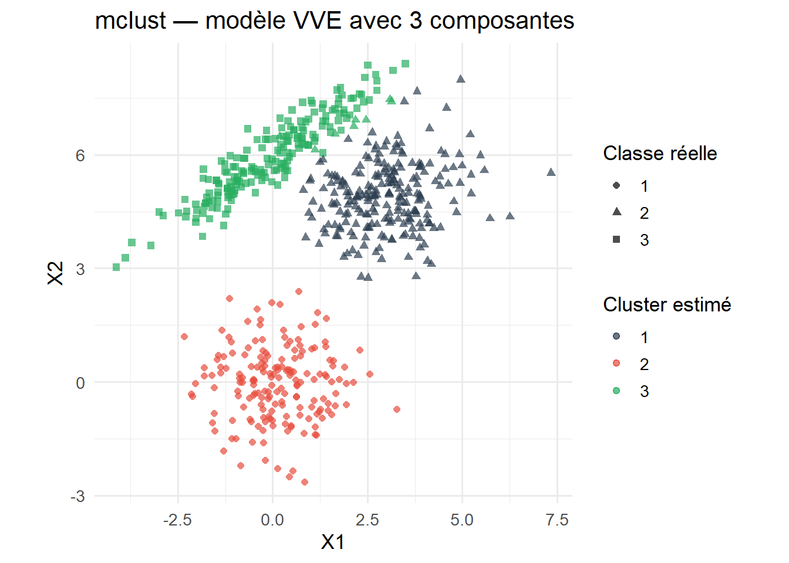
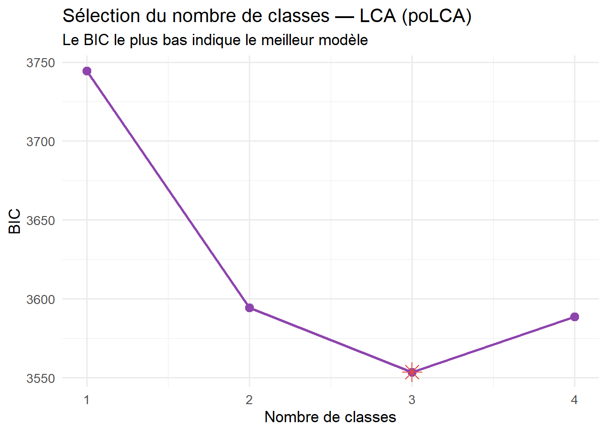

#| label: verification-et-installation-packages
#| echo: false
#| message: false
#| warning: false
# Liste globale de tous les packages requis pour ce document
packages_requis <- c("mclust", "mvtnorm", "MASS", "ggplot2", "dplyr", "tidyr", "plotly", "gtools", "knitr", "plot3D")
# Boucle de vérification et d'installation automatique
for (pkg in packages_requis) {
if (!require(pkg, character.only = TRUE, quietly = TRUE)) {
install.packages(pkg, dependencies = TRUE, repos = "[https://cloud.r-project.org](https://cloud.r-project.org)")
library(pkg, character.only = TRUE)
}
}Analyse de Clustering avec R
D’après Flynt & Dean (2016) — A Survey of Popular R Packages for Cluster Analysis
1 Introduction
L’analyse de clustering est un ensemble de méthodes statistiques permettant de découvrir des structures de groupes dans les données, en regroupant des observations similaires dans des classes distinctes (Everitt et al., 2011).
L’article de Flynt & Dean (2016) passe en revue les packages R les plus utilisés pour le clustering :
kmeansethclust(packagestats) — méthodes algorithmiquesmclust— clustering basé sur les modèles (MBC, données continues)poLCA— analyse de classes latentes (LCA, données catégorielles)clustMD— MBC pour données mixtes (continues + catégorielles)
Ces méthodes peuvent être classées en trois grandes catégories : algorithmiques, paramétriques et non paramétriques.
2 Les données simulées
2.1 Description
Le jeu de données simulé contient 600 observations avec :
- 2 variables continues (X1, X2) formant 3 groupes sous-jacents (2 sphériques, 1 elliptique)
- 4 variables discrètes : c1, c2, c3 (binaires), c4 (ternaire)
2.2 Génération des données
library(mclust)
library(mvtnorm)
library(MASS)
library(ggplot2)
library(dplyr)
library(tidyr)
library(plotly)set.seed(288)
# Paramètres des groupes
pi_vec <- c(0.3, 0.4, 0.3)
mu <- matrix(c(0, 0, 3, 5, 0, 6), 2, 3, byrow = FALSE)
Sigma.sph <- diag(c(1, 1))
Sigma.ell <- matrix(c(2, 1.3, 1.3, 1), 2, 2, byrow = TRUE)
# Attribution des classes
cl <- sample(c(1, 2, 3), 600, replace = TRUE, prob = pi_vec)
# Variables continues
X <- matrix(0, 600, 2)
for (i in 1:600) {
if (cl[i] == 3) {
X[i, ] <- rmvnorm(1, mu[, 3], Sigma.ell)
} else {
X[i, ] <- rmvnorm(1, mu[, cl[i]], Sigma.sph)
}
}
# Variables discrètes
c1 <- rbinom(600, 1, .5) + 1
c2 <- integer(600)
for (i in 1:600) {
c2[i] <- ifelse(cl[i] == 1, rbinom(1, 1, .1) + 1, rbinom(1, 1, .9) + 1)
}
c3 <- integer(600)
for (i in 1:600) {
if (cl[i] == 1) c3[i] <- sample(1:3, 1, prob = c(.6, .2, .2))
if (cl[i] == 2) c3[i] <- sample(1:3, 1, prob = c(.1, .8, .1))
if (cl[i] == 3) c3[i] <- sample(1:3, 1, prob = c(.1, .1, .8))
}
c4 <- integer(600)
for (i in 1:600) {
c4[i] <- ifelse(cl[i] == 2, rbinom(1, 1, .8) + 1, rbinom(1, 1, .2) + 1)
}
# Jeu de données complet
vars <- cbind(X, c1, c2, c3, c4)
colnames(vars) <- c("X1", "X2", "c1", "c2", "c3", "c4")2.3 Visualisation des données continues
df_plot <- data.frame(X1 = X[, 1], X2 = X[, 2], Cluster = factor(cl))
ggplot(df_plot, aes(x = X1, y = X2, color = Cluster, shape = Cluster)) +
geom_point(alpha = 0.7, size = 1.8) +
scale_color_manual(
values = c("1" = "#2C3E50", "2" = "#E74C3C", "3" = "#27AE60"),
labels = c("Groupe 1 (noir)", "Groupe 2 (rouge)", "Groupe 3 (vert)")
) +
scale_shape_manual(
values = c("1" = 16, "2" = 17, "3" = 18),
labels = c("Groupe 1 (noir)", "Groupe 2 (rouge)", "Groupe 3 (vert)")
) +
labs(
title = "Variables continues — affectation réelle des classes",
x = "X1", y = "X2", color = "Cluster", shape = "Cluster"
) +
theme_minimal(base_size = 13) +
coord_equal()
x_bins <- seq(min(X[,1]), max(X[,1]), length.out = 20)
y_bins <- seq(min(X[,2]), max(X[,2]), length.out = 20)
grid_counts <- table(cut(X[,1], x_bins), cut(X[,2], y_bins))
hist3D(z = grid_counts, x = x_bins[-1], y = y_bins[-1],
phi = 30, theta = 45,
col = "skyblue", border = "black",
xlab = "V1", ylab = "V2", zlab = "Fréquence (N)",
main = "Histogramme 3D des fréquences")
2.4 Visualisation des variables discrètes
df_disc <- data.frame(
c1 = factor(c1, levels = 1:2),
c2 = factor(c2, levels = 1:2),
c3 = factor(c3, levels = 1:3),
c4 = factor(c4, levels = 1:2),
cluster = factor(cl, labels = c("Cl 1", "Cl 2", "Cl 3"))
)
df_long <- pivot_longer(df_disc, cols = c(c1, c2, c3, c4),
names_to = "variable", values_to = "modalite")
df_prop <- df_long %>%
group_by(variable, cluster, modalite) %>%
summarise(n = n(), .groups = "drop") %>%
group_by(variable, cluster) %>%
mutate(pct = 100 * n / sum(n))
ggplot(df_prop, aes(x = cluster, y = pct, fill = modalite)) +
geom_bar(stat = "identity", position = "stack") +
facet_wrap(~variable, nrow = 1, labeller = label_both) +
labs(
title = "Variables discrètes — proportion des modalités par cluster",
x = "Cluster", y = "Pourcentage (%)", fill = "Modalité"
) +
theme_minimal(base_size = 12)
3 Méthodes algorithmiques
3.1 K-means
3.1.1 Principe
Le k-means affecte chaque point au cluster dont il est le plus proche du centroïde (distance euclidienne). Il suppose une variabilité égale dans tous les clusters → clusters sphériques de volume égal.
Le choix du nombre de clusters K se fait généralement via la méthode du coude : on trace la somme des carrés intra-cluster (WSS) en fonction de K et on repère le point d’inflexion.
3.1.2 Choix du nombre de clusters K
# Calcul du WSS pour k = 1 à 10
wss <- sapply(1:10, function(k) {
kmeans(X, centers = k, nstart = 25)$tot.withinss
})
# Détection automatique du coude (méthode de la distance maximale)
k_vals <- 1:10
p1 <- c(1, wss[1])
p2 <- c(10, wss[10])
distance <- sapply(k_vals, function(i) {
p <- c(i, wss[i])
num <- abs((p2[2] - p1[2]) * p[1] - (p2[1] - p1[1]) * p[2] + p2[1] * p1[2] - p2[2] * p1[1])
den <- sqrt((p2[2] - p1[2])^2 + (p2[1] - p1[1])^2)
num / den
})
k_opt <- which.max(distance)
df_wss <- data.frame(k = k_vals, wss = wss)
ggplot(df_wss, aes(x = k, y = wss)) +
geom_line(color = "#2980B9", linewidth = 1) +
geom_point(color = "#2980B9", size = 3) +
geom_vline(xintercept = k_opt, linetype = "dashed", color = "#E74C3C", linewidth = 1) +
annotate("text", x = k_opt + 0.3, y = max(wss) * 0.95,
label = paste("K optimal =", k_opt),
color = "#E74C3C", fontface = "bold", hjust = 0) +
scale_x_continuous(breaks = 1:10) +
labs(
title = "Méthode du coude (Elbow method)",
x = "Nombre de clusters K",
y = "WSS total (Within-Cluster Sum of Squares)"
) +
theme_minimal(base_size = 13)
Le coude se situe à K = 3, ce qui correspond au nombre de groupes simulés.
3.1.3 Application du K-means avec K = 3
set.seed(42)
km <- kmeans(X, centers = 3, nstart = 50)df_km <- data.frame(X1 = X[, 1], X2 = X[, 2],
Estime = factor(km$cluster),
Reel = factor(cl))
ggplot(df_km, aes(x = X1, y = X2, color = Estime, shape = Reel)) +
geom_point(alpha = 0.7, size = 1.8) +
scale_color_manual(values = c("1" = "#2C3E50", "2" = "#E74C3C", "3" = "#27AE60")) +
labs(
title = "K-means (K = 3) — clusters estimés",
x = "X1", y = "X2",
color = "Cluster estimé", shape = "Classe réelle"
) +
theme_minimal(base_size = 13) +
coord_equal()
3.1.4 Table de confusion et taux de mauvaise classification
# Permuter les labels pour maximiser la concordance
conf_mat <- table(cl, km$cluster)
perms <- gtools::permutations(3, 3)
best_sum <- 0
best_perm <- NULL
for (i in 1:nrow(perms)) {
perm <- perms[i, ]
diag_sum <- sum(diag(conf_mat[, perm]))
if (diag_sum > best_sum) {
best_sum <- diag_sum
best_perm <- perm
}
}
conf_opt <- conf_mat[, best_perm]
taux_erreur_km <- round((600 - best_sum) / 600, 4)knitr::kable(conf_opt, col.names = paste("Cluster estimé", 1:3),
row.names = TRUE, caption = "Lignes = classes réelles, Colonnes = clusters estimés")| Cluster estimé 1 | Cluster estimé 2 | Cluster estimé 3 | |
|---|---|---|---|
| 1 | 177 | 0 | 0 |
| 2 | 0 | 227 | 10 |
| 3 | 0 | 33 | 153 |
Taux de mauvaise classification K-means : 0.0717
Le groupe 1 est parfaitement retrouvé. Les erreurs concernent les groupes 2 et 3 qui se chevauchent.
3.2 Classification hiérarchique ascendante (CAH)
3.2.1 Principe
La CAH fusionne successivement les paires de clusters les plus proches jusqu’à n’en former qu’un seul. Le résultat est visualisé sous forme de dendrogramme.
Différentes méthodes de liaison (linkage) :
| Méthode | Définition de la distance entre clusters |
|---|---|
| Single | Minimum des distances pairwise |
| Complete | Maximum des distances pairwise |
| Average | Moyenne des distances pairwise |
| Ward | Augmentation de la variance intra-cluster |
3.2.2 Application sur les données continues
h2 <- hclust(dist(X), method = "average")
# Couleurs selon la classe réelle
cols <- c("#2C3E50", "#E74C3C", "#27AE60")
dend_cols <- cols[cl]
plot(h2,
labels = FALSE,
main = "Dendrogramme — linkage average",
xlab = "", sub = "",
ylab = "Hauteur de fusion")
# Ligne de coupe à 3 clusters
rect.hclust(h2, k = 3, border = c("#E74C3C", "#27AE60", "#2C3E50"))
3.2.3 Table de confusion CAH
h2cut <- cutree(h2, k = 3)
conf_h <- table(cl, h2cut)
# Permuter pour maximiser la concordance
best_sum_h <- 0
best_perm_h <- NULL
for (i in 1:nrow(perms)) {
perm <- perms[i, ]
diag_sum <- sum(diag(conf_h[, perm]))
if (diag_sum > best_sum_h) {
best_sum_h <- diag_sum
best_perm_h <- perm
}
}
conf_h_opt <- conf_h[, best_perm_h]
taux_erreur_cah <- round((600 - best_sum_h) / 600, 4)knitr::kable(conf_h_opt, col.names = paste("Cluster estimé", 1:3), row.names = TRUE)| Cluster estimé 1 | Cluster estimé 2 | Cluster estimé 3 | |
|---|---|---|---|
| 1 | 177 | 0 | 0 |
| 2 | 0 | 237 | 0 |
| 3 | 0 | 182 | 4 |
Taux de mauvaise classification CAH (average) : 0.3033
Moins performant que le K-means ici, car le linkage average fusionne mal les groupes 2 et 3 qui se chevauchent.
4 Méthodes paramétriques (modèles de mélanges finis)
4.1 MBC — Model-Based Clustering (mclust)
4.1.1 Principe
Le MBC (Model-Based Clustering) suppose que les données proviennent d’un mélange de lois gaussiennes :
\[f(\mathbf{x}) = \sum_{k=1}^{K} \tau_k f_k(\mathbf{x}), \quad 0 \leq \tau_k \leq 1, \quad \sum_{k=1}^{K} \tau_k = 1\]
Chaque composante \(k\) est caractérisée par une moyenne, une matrice de variance, et un poids \(\tau_k\). Le nombre de composantes optimal est choisi par le critère BIC (à maximiser).
mclust teste automatiquement différentes paramétrisation de la matrice de variance (EII, VVV, VVE, etc.) pour 1 à 9 composantes.
4.1.2 Application
library(mclust)
ml <- Mclust(X)plot(ml, what = "BIC",
main = "Sélection du modèle par BIC (mclust)")
df_mclust <- data.frame(X1 = X[, 1], X2 = X[, 2],
Estime = factor(ml$classification),
Reel = factor(cl))
ggplot(df_mclust, aes(x = X1, y = X2, color = Estime, shape = Reel)) +
geom_point(alpha = 0.7, size = 1.8) +
scale_color_manual(values = c("1" = "#2C3E50", "2" = "#E74C3C", "3" = "#27AE60")) +
labs(
title = paste0("mclust — modèle ", ml$modelName, " avec ", ml$G, " composantes"),
x = "X1", y = "X2",
color = "Cluster estimé", shape = "Classe réelle"
) +
theme_minimal(base_size = 13) +
coord_equal()
4.1.3 Table de confusion MBC
conf_m <- table(cl, ml$classification)
best_sum_m <- 0
best_perm_m <- NULL
for (i in 1:nrow(perms)) {
perm <- perms[i, ]
diag_sum <- sum(diag(conf_m[, perm]))
if (diag_sum > best_sum_m) {
best_sum_m <- diag_sum
best_perm_m <- perm
}
}
conf_m_opt <- conf_m[, best_perm_m]
taux_erreur_mbc <- round((600 - best_sum_m) / 600, 4)knitr::kable(conf_m_opt, col.names = paste("Cluster estimé", 1:3), row.names = TRUE)| Cluster estimé 1 | Cluster estimé 2 | Cluster estimé 3 | |
|---|---|---|---|
| 1 | 177 | 0 | 0 |
| 2 | 0 | 229 | 8 |
| 3 | 0 | 0 | 186 |
Taux de mauvaise classification MBC : 0.0133
Le modèle VVE avec 3 composantes est sélectionné. Il gère bien la forme elliptique du groupe 3.
4.2 LCA — Latent Class Analysis (poLCA)
4.2.1 Principe
La LCA est l’équivalent du MBC pour les données catégorielles. Elle suppose l’indépendance conditionnelle des variables dans chaque classe, avec une loi multinomiale pour chaque variable dans chaque composante.
Le nombre de classes est choisi par le BIC (à minimiser ici).
4.2.2 Application sur les variables discrètes
library(poLCA)
f <- cbind(c1, c2, c3, c4) ~ 1
df_lca <- as.data.frame(vars[, c("c1", "c2", "c3", "c4")])
lca1 <- poLCA(f, df_lca, nclass = 1, verbose = FALSE)
lca2 <- poLCA(f, df_lca, nclass = 2, verbose = FALSE)
lca3 <- poLCA(f, df_lca, nclass = 3, maxiter = 3500, verbose = FALSE)
lca4 <- poLCA(f, df_lca, nclass = 4, maxiter = 21000, verbose = FALSE)df_bic <- data.frame(
k = 1:4,
BIC = c(lca1$bic, lca2$bic, lca3$bic, lca4$bic)
)
ggplot(df_bic, aes(x = k, y = BIC)) +
geom_line(color = "#8E44AD", linewidth = 1) +
geom_point(color = "#8E44AD", size = 3) +
geom_point(data = df_bic[which.min(df_bic$BIC), ],
aes(x = k, y = BIC), color = "#E74C3C", size = 5, shape = 8) +
scale_x_continuous(breaks = 1:4) +
labs(
title = "Sélection du nombre de classes — LCA (poLCA)",
subtitle = "Le BIC le plus bas indique le meilleur modèle",
x = "Nombre de classes", y = "BIC"
) +
theme_minimal(base_size = 13)
4.2.3 Table de confusion LCA
conf_lca <- table(cl, lca3$predclass)
best_sum_lca <- 0
best_perm_lca <- NULL
for (i in 1:nrow(perms)) {
perm <- perms[i, ]
diag_sum <- sum(diag(conf_lca[, perm]))
if (diag_sum > best_sum_lca) {
best_sum_lca <- diag_sum
best_perm_lca <- perm
}
}
conf_lca_opt <- conf_lca[, best_perm_lca]
taux_erreur_lca <- round((600 - best_sum_lca) / 600, 4)knitr::kable(conf_lca_opt, col.names = paste("Classe estimée", 1:3), row.names = TRUE)| Classe estimée 1 | Classe estimée 2 | Classe estimée 3 | |
|---|---|---|---|
| 1 | 129 | 12 | 36 |
| 2 | 12 | 178 | 47 |
| 3 | 13 | 11 | 162 |
Taux de mauvaise classification LCA : 0.2183
Plus élevé qu’avec le MBC sur données continues, car les variables discrètes séparent moins bien les groupes.
5 Comparaison des méthodes
df_compare <- data.frame(
Méthode = c("K-means", "CAH (average)", "MBC (mclust)", "LCA (poLCA)"),
Données = c("Continues", "Continues", "Continues", "Catégorielles"),
Paramètre = c(paste("K =", k_opt), "K = 3, average", paste(ml$modelName, ml$G, "comp."),
"3 classes"),
`Taux d'erreur` = c(taux_erreur_km, taux_erreur_cah, taux_erreur_mbc, taux_erreur_lca)
)
knitr::kable(df_compare, digits = 4, align = "lllc",
col.names = c("Méthode", "Type de données", "Paramètre sélectionné", "Taux d'erreur"))| Méthode | Type de données | Paramètre sélectionné | Taux d’erreur |
|---|---|---|---|
| K-means | Continues | K = 3 | 0.0717 |
| CAH (average) | Continues | K = 3, average | 0.3033 |
| MBC (mclust) | Continues | VVE 3 comp. | 0.0133 |
| LCA (poLCA) | Catégorielles | 3 classes | 0.2183 |
Points clés de la comparaison :
- Le MBC (
mclust) est le plus performant sur les données continues car il gère la forme elliptique du groupe 3. - Le K-means est simple et efficace pour des clusters sphériques.
- La CAH avec average linkage est moins adaptée ici en raison du chevauchement.
- La LCA a un taux d’erreur plus élevé car les variables discrètes séparent moins bien les groupes.
- Le clustMD tire parti des deux types de variables simultanément.
6 Discussion
Comme illustré, différentes méthodes de clustering appliquées aux mêmes données peuvent produire des résultats très différents. Il est difficile de recommander une méthode universelle.
Recommandations pratiques (Flynt & Dean, 2016) :
- Le clustering doit être considéré comme une analyse exploratoire et les résultats devraient être validés sur un second jeu de données.
- Le single linkage hiérarchique est surtout utile pour identifier des outliers.
- Si on croit en une hiérarchie réelle dans les données, la CAH est préférable.
- Si les clusters allongés n’ont pas de sens substantiel, préférer des modèles sphériques (EII, VII, k-means, Ward).
Extensions mentionnées dans l’article :
| Extension | Package R |
|---|---|
| K-médoïdes (centres = vraies observations) | cluster (pam) |
| CAH divisive | cluster (diana) |
| Régression par mélange | flexmix |
| Sélection de variables | clustvarsel, Rmixmod |
| Clustering non paramétrique | pdfCluster |
7 Références
Flynt, A., & Dean, N. (2016). A survey of popular R packages for cluster analysis. Journal of Educational and Behavioral Statistics, 41(2), 205–225.
Everitt, B., Landau, S., Leese, M., & Stahl, D. (2011). Cluster Analysis. Wiley.
Fraley, C., & Raftery, A. E. (2002). Model-based clustering, discriminant analysis, and density estimation. Journal of the American Statistical Association, 97, 611–631.
Linzer, D. A., & Lewis, J. B. (2011). poLCA: An R package for polytomous variable latent class analysis. Journal of Statistical Software, 42, 1–29.
McParland, D. (2015). clustMD: Model based clustering for mixed data (R package Version 1.1).